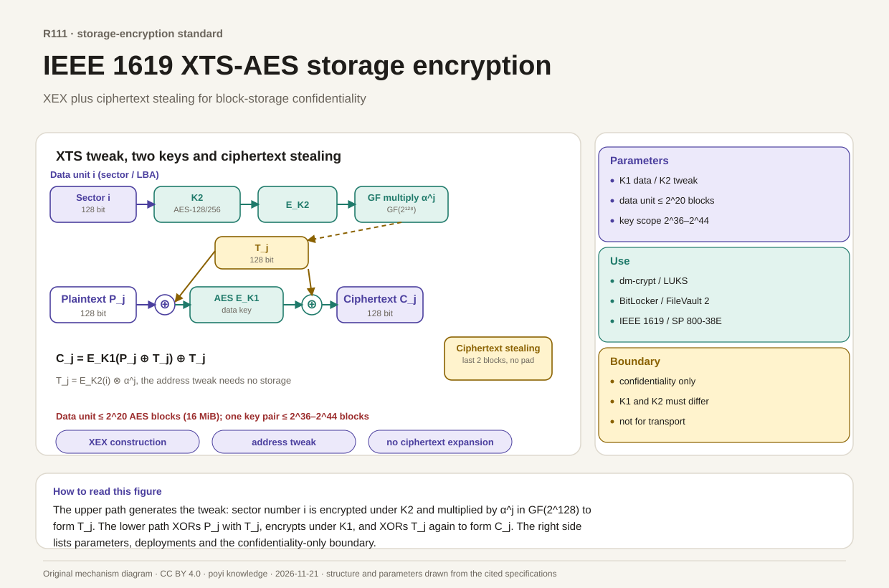
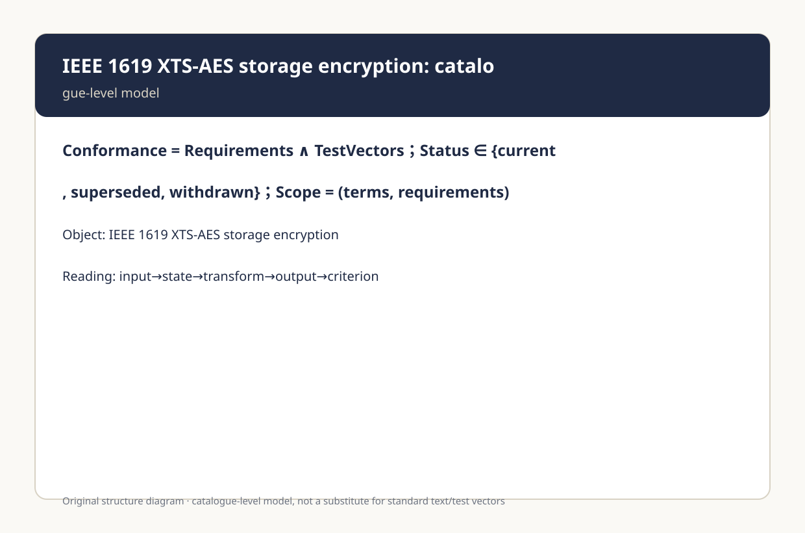

Principles
Standard: IEEE 1619 XTS-AES storage encryption (IEEE 1619 XTS-AES 存储加密). ### XEX: XOR tweak, AES, XOR again
XTS-AES is an instance of XEX (XOR–Encrypt–XOR). For block P_j inside data unit i, let T_j = E_{K2}(i) ⊗ α^j, with multiplication in GF(2^128) and α a primitive element; encryption is C_j = E_{K1}(P_j ⊕ T_j) ⊕ T_j, and decryption reverses it. The same plaintext in a different sector or block position gives a different ciphertext; rewriting the same position gives the same ciphertext. ### Two keys
The XTS key is K1 || K2: K1 encrypts data, K2 only generates tweaks. AES-128 corresponds to a 256-bit XTS key and AES-256 to 512 bits. The two subkeys must differ; if K1 = K2, a chosen-ciphertext attack defeats XTS's main confidentiality assurance. ### Ciphertext stealing
A data unit need not be a multiple of 128 bits. The last two blocks use ciphertext stealing: encrypt the penultimate block to CC, take its first b bits as the final ciphertext block, concatenate the remaining 128−b bits with the last plaintext block into PP and encrypt it, then swap the last two ciphertext pieces on output. The ciphertext length equals the plaintext length, with no padding, which suits fixed-size sectors.

Why it matters
Storage devices read and write sectors randomly and cannot depend on a whole-file CBC chain. XTS decrypts each block independently; the tweak is derived implicitly from the sector/LBA and block index, so no IV or nonce is stored on disk. The ciphertext does not expand, which suits in-place encryption.
Under ECB, equal plaintext blocks produce equal ciphertext and leak sector structure; XTS uses an address-dependent tweak to break up equal blocks. It is not authenticated encryption and does not prevent tampering, but it fits the random-access model of disks better than plain ECB or CBC.
Applications
IEEE Std 1619-2007 defines XTS-AES; NIST SP 800-38E (2010) approves it for storage devices and requires each data unit to contain at most 2^20 AES blocks (16 MiB). IEEE 1619-2018 wrote that limit into the standard and capped the total number of blocks at 2^64; IEEE 1619-2025 added a key scope limiting blocks per key pair to 2^36 through 2^44.
dm-crypt/LUKS, BitLocker, FileVault 2, OpenSSL and NetBSD cgd use XTS-derived implementations. A typical sector is 512 B or 4 KiB, far below the 16 MiB data-unit limit; but the total data volume written under one key approaches the key-scope boundary.

Limits & attacks
XTS has no authentication tag; an attacker can replay, reorder or modify ciphertext blocks. If the attacker can observe plaintext–ciphertext pairs and overwrite data, decryption can be manipulated. Integrity must be added at the file-system or application layer (AEAD, HMAC, a Merkle tree), or XTS must be treated as “protection against offline theft”, not “protection against active tampering”.
K1 and K2 must be independent, and blocks under one key scope must be capped. The 2025 standard limits a key scope to 2^36–2^44 blocks; under the 2^128 birthday bound the collision probability is roughly 2^-56 to 2^-40. Sector numbers must be unique and never reused: cloning, snapshots and disk remapping must preserve tweak uniqueness.
XTS targets block storage, not TLS or network transport; transport should use AEAD.
History
IEEE 1619-2007 was published in 2007 and defined XTS-AES; NIST SP 800-38E followed in January 2010, approving it as a storage confidentiality mode. IEEE 1619-2018 revised the data-unit and total-block limits; IEEE 1619-2025 appeared in June 2025 with key-scope requirements.
XTS derives from Rogaway's XEX; the earlier LRW was also a tweakable disk-encryption mode but was replaced by XTS because of security and implementation issues. XTS stands for “XEX Tweakable Block Cipher with Ciphertext Stealing”, naming its three components.
Worked example & verification
Formal model and reproduction steps
[S=\min_i S_i,\quad S_i\in{\text{密钥强度},\text{分组安全},\text{实现安全}}]
IEEE 1619 XTS-AES storage encryption: the registered public parameters, key material or randomness, and message are mapped through the stated transformation to an output checked against the registered criterion. The worked example is a structural reproduction, not a new test vector; parameter ranges, standard versions and implementation details remain source-bound.
References
- Wikipedia search entry for IEEE 1619 XTS-AES 存储加密. https://zh.wikipedia.org/w/index.php?search=IEEE%201619%20XTS-AES%20%E5%AD%98%E5%82%A8%E5%8A%A0%E5%AF%86
- Handbook of Applied Cryptography (Menezes, van Oorschot, Vanstone). https://www.cacr.math.uwaterloo.ca/hac/